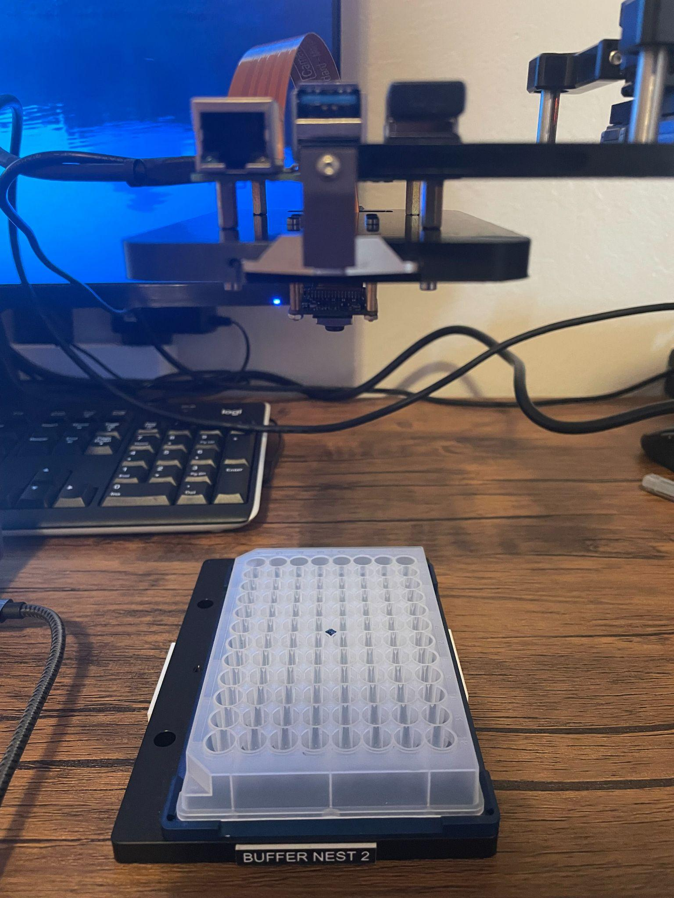
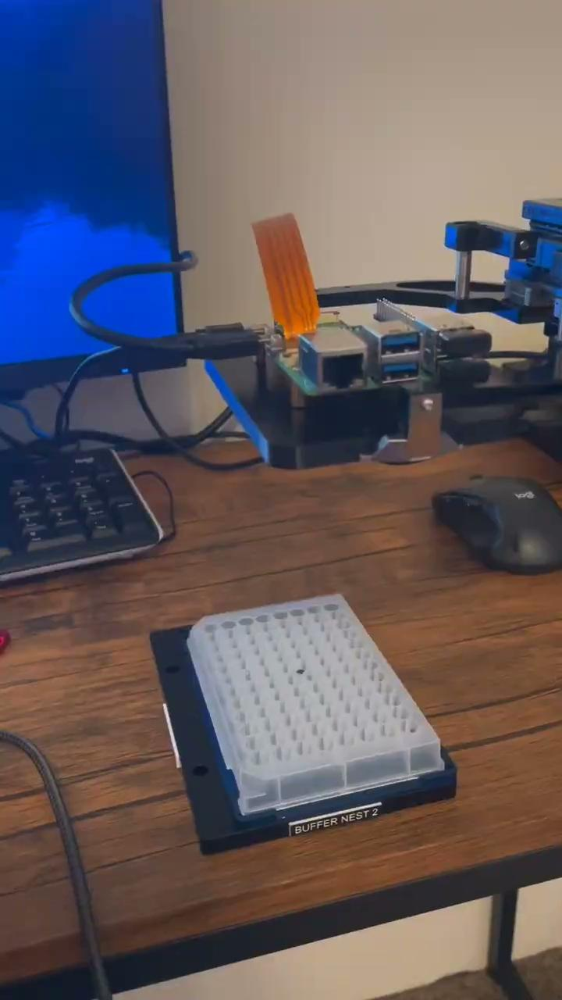
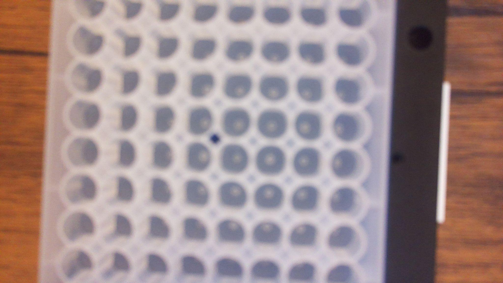
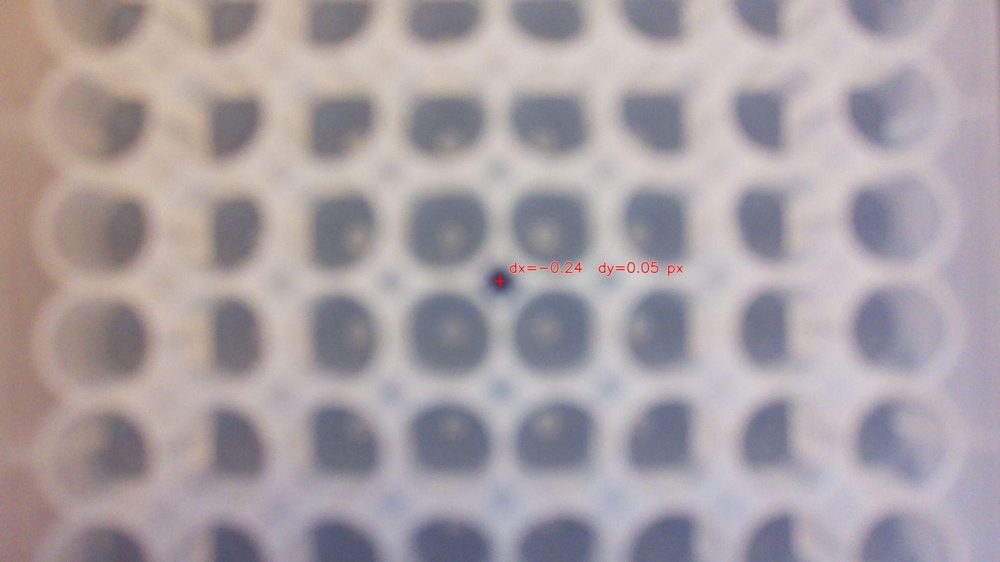

PROJECT 01 · COMPUTER VISION & ROBOTICS
OpenCV Robot Camera Perception
Developed a camera vision robotic system using OpenCV and Raspberry Pi to detect a plate's center and automatically guide a Mecademic 6-DoF robot arm toward the target position.

Overview
This project developed a camera vision perception system to automatically align a Mecademic robotic arm with the center of an SBS-format plate.
A Raspberry Pi captures images from a mounted camera and processes them using OpenCV to identify the plate and its center marker.
The calculated positional offsets are sent to the robot driver via MQTT IoT protocol. The Python based robot driver then sends incremental move commands till robot is within a certain tolerance of center of plate.
Objective
Enable the robot to automatically align its camera center with a target marker on a plate, reducing reliance on a fixed, predefined plate position.
System Architecture
The system follows a perception-to-motion pipeline that connects camera observations to robot movement.

Hardware Design
The system uses a Raspberry Pi and a Raspberry Pi Camera Module 3 to capture images for the perception algorithm.
Camera
- Raspberry Pi Camera Module 3
- 11.9-megapixel resolution
- 1.4 μm × 1.4 μm pixel size
Robot & Controller
- Meca robotic arm
- Raspberry Pi
- Camera mounting hardware
- SBS-format target plate
Camera Mounting Design
The mounting design positions the camera at the center of the gripper assembly, accounting for gripper finger placement, SBS plate dimensions, and camera cable routing.


Computer Vision Pipeline
OpenCV processes the camera image to identify the plate and determine the displacement between the camera center and the plate's center marker.
- Image acquisition: Capture an image of the plate using the Raspberry Pi camera.
- Grayscale conversion: Convert the image to grayscale for further processing.
- Plate detection: Identify the largest white contour corresponding to the plate.
- Background masking: White out the region outside the detected plate.
- Center marker detection: Invert the image colors to detect the black marker inside the plate.
- Offset calculation: Subtract the camera center coordinates from the detected marker center to obtain dx and dy in pixels.




PID Feedback Control
A Proportional-Integral-Derivative (PID) controller was used to position the robot over the object's center. The OpenCV algorithm calculates the X and Y offsets between the camera center and the plate marker. These measured offsets serve as the feedback error for the positioning controller.
The Raspberry Pi publishes the detected offsets through MQTT. The Python-based robot driver subscribes to the measurements and uses PID control to determine the next incremental robot position correction.
How the Controller Works
- Measure position error: OpenCV returns the marker's X/Y displacement from the camera center in pixels.
- Calculate PID correction: The proportional term responds to the current error, the integral term accounts for accumulated error, and the derivative term responds to changes in error.
- Command a bounded movement: The robot driver converts the controller output into an incremental movement command, with corrections capped at 5 mm per command.
- Update feedback: The camera measures the remaining offset after the movement. The process repeats until the error is within the alignment tolerance.
Robot Movement & Control
The Raspberry Pi runs the OpenCV algorithm and publishes the detected pixel displacement values (dx, dy) to a network endpoint.
A script running on the Meca driver subscribes to these values and uses them to calculate and command robot movement.
The robot moves to reduce the difference between the camera center and the detected plate marker until the camera is positioned over the target.
Movement Limiting
The calculated robot movement is limited to a maximum of 5 mm per correction command. Any calculated movement exceeding this threshold is capped at 5 mm.
Results
The system demonstrated camera-guided alignment of the Meca robotic arm with the plate's center marker.
The reported final alignment error was approximately 2 mm in both X and Y.



Prototype Hardware Cost
The prototype used relatively low-cost camera and computing hardware.
| Component | Reported Cost |
|---|---|
| Raspberry Pi | $70 |
| Camera | $35 |
| Mounting dowels | $10 |
| 3D-printed mounting part | $0 (in-house) |
| Subtotal | $115 |
This subtotal includes the listed camera, computing, and mounting components. It excludes the robot arm and other unlisted equipment.
Key Takeaways
This project demonstrates the integration of computer vision and robotic motion for automated object alignment.
It combines image processing, contour-based target detection, pixel displacement calculation, network communication, and bounded robotic movement into a single workflow.